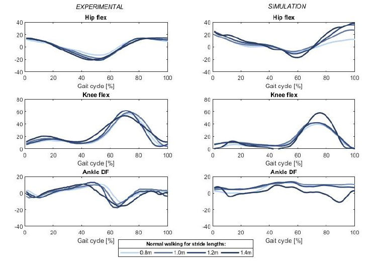

Publications & Outputs
Undergraduate Research
Conference Proceedings
Non-integer Approach to Modelling Compartments of Cardiovascular Circulatory System Proceedings of 3rd International Workshop on Mathematical Modeling and Scientific Computing, EPIC Series in Computing, Volume 104, 2024.
Abstract
Mathematical modelling of the cardiovascular system is a powerful asset for predicting cardiovascular diseases. The system is analyzed through compartments as connected subsystems with inputs and outputs. The study identifies models for four subsystems (left ventricle to left atrium, ascending aorta, descending aorta, and left common carotid artery) by modeling frequency response. The goal is to discover a linear model with a non-integer order that outperforms high-order autoregressive exogenous input (ARX) integer models. Model identification occurs non-parametrically to achieve the best smooth fit in the frequency domain using the particle swarm optimization (PSO) algorithm.

Predictive Simulations Capture the Effect of Changing Stride Length and Speed on Lower Body Kinematics The 6th International Conference Mechanical Engineering in XXI Century, December 14-15, 2023, Niš, Serbia.
Abstract
This study evaluates the ability of a predictive simulation framework to capture changes in stride length and speed on the gait pattern by comparing predicted kinematics with experimental data from a motion analysis laboratory. An optimal control predictive framework ran simulations on a 2D model across three gait speeds and four stride lengths. Motion captures for the same conditions were processed to obtain hip, knee, and ankle flexion angles throughout the gait cycle. The analysis considered range of motion, peak values, and overall patterns.

Download Full PaperParameter Identification of Viscoelastic Materials Using Different Deformation Velocities 9th International Congress of the Serbian Society of Mechanics, July 5-7, 2023, Vrnjačka Banja, Serbia.
Abstract
The fractional Kelvin-Zener model of a viscoelastic body was used to model the behavior of monofilament and fluorocarbon during a ramp and hold type of experiment with different deformation velocities. Experimental measurements were taken on 9 samples of each material, with three groups tested at different deformation rates during the initial phase. Riemann-Liouville fractional derivatives were numerically approximated using the Grünwald-Letnikov definition. Four model parameters were determined for each sample, and experimental results were compared with the fractional Kelvin-Zener model predictions.
Poster Presentations
Parameter Identification of Viscoelastic Materials Using Different Deformation Velocities Summer School “Mechanics of active soft materials: experiments, theory, numerics, and applications”
Abstract
- Over the past few decades, polymers have gained popularity as a preferred engineering structural material due to their affordability, ease of processing, weight savings, corrosion resistance, and other notable benefits.
- This paper investigates the influence of deformation rate on the values of parameters of the fractional Kelvin-Zener model.
- The behavior of two viscoelastic materials was tested, with three sample groups formed for each material, all subjected to the same deformation speed.
- The change in deformation speed affected the parameter values in a very similar manner for both materials.